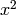
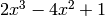
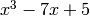
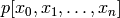
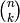
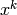
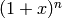
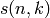
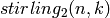

New in version 0.3.
This module add some utility function to pypol.
Note
In all these examples it will be assumed that all items in the pypol.funcs namespace have been imported:
from pypol.funcs import *
The pypol.funcs module offers these basic functions:
Returns True whether a and b are divisible, i.e. a % b == 0
| Params a: | the first polynomial |
|---|---|
| Params b: | the second polynomial |
| Return type: | bool |
Examples
>>> a, b = poly1d([1, 7, 6]), poly1d([1, -5, -6])
>>> a, b
(+ x^2 + 7x + 6, + x^2 - 5x - 6)
>>> c = gcd(a, b)
>>> c
+ 12x + 12
>>> divisible(a, c)
True
>>> divisible(b, c)
True
New in version 0.3.
Make a polynomial from its roots. These can be integer, float or fractions.Fraction objects but the complex type is not supported.
Examples
>>> p = from_roots([4, -2, 153, -52])
>>> p
+ x^4 - 103x^3 - 7762x^2 + 16720x + 63648
>>> p(4)
0
>>> p(-2)
0
>>> p(153)
0
>>> p(-52)
0
>>> roots.newton(p, 1000)
153.0
>>> roots.newton(p, 100)
-2.0
>>> roots.newton(p, 10)
4.0
>>> roots.newton(p, -10000)
-52.0
Returns a polynomial generated randomly.
| Parameters: |
|
|---|---|
| Return type: |
Some examples:
>>> random_poly()
+ 2x^4y^5 + 3y^5 + 5xy^5 + 10x^2y^3z^3 - 5z
>>> random_poly()
+ 7xy^5 - 3z^4 - 2
>>> random_poly(len_=3, letters='ab')
+ 9a^5 + 7a^2b^4 - 8ab^2
>>> random_poly(letters='abcdef', max_letters=1)
- 9
>>> random_poly(letters='abcdef', max_letters=1)
- 5e^5 + 2f^4 + 5a^2
>>> random_poly(letters='abcdef', max_letters=2)
- 9f^5 - d - 10
>>> random_poly(letters='abcdef', max_letters=2)
- 9de^5 - 4a^3d^5 - 5d^5 + 4af^3 + 2e^2f - 3f^2
>>> random_poly(letters='abcdef', max_letters=2, exp_range=xrange(0, 20, 5))
- 7e^15 + 5d^15 - 10c^15 - 9b^10 - 12e^5 - 12c^5 - 2f^5
New in version 0.2: The unique parameter.
New in version 0.3: The not_null parameter.
Returns the derivative of the polynomial poly.
| Parameters: | m (integer) – order of differentiation (default 1) |
|---|---|
| Return type: | pypol.Polynomial |
Examples
Let’s calculate the derivative of the polynomials  and :
>>> p1 = poly1d([1, 0, 0]) ## or poly1d([1, 0], right_hand_side=False)
>>> p1
+ x^2
>>> polyder(p1)
+ 2x
>>> p2 = poly1d([2, -4, 0, 1])
>>> p2
+ 2x^3 - 4x^2 + 1
>>> polyder(p2)
+ 6x^2 - 8x
New in version 0.3.
New in version 0.4: The m parameter.
| Parameters: |
|
|---|---|
| Return type: |
Examples
Let’s calculate the indefinite integrals of the polynomials: and :
>>> p1, p2 = poly1d([-1, 0]), poly1d([1, 0, -7, 5])
>>> p1, p2
(- x, + x^3 - 7x + 5)
>>> polyint(p1)
- 1/2x^2
>>> polyint(p2)
+ 1/4x^4 - 7/2x^2 + 5x
>>> polyder(polyint(p2))
+ x^3 - 7x + 5
>>> polyder(polyint(p1))
- x
The integration costants default to zero, but can be specified:
>>> polyder(p2)
+ 3x^2 - 7
>>> polyint(polyder(p2))
+ x^3 - 7x ## + 5 is missing!
>>> polyint(polyder(p2), [5])
+ x^3 - 7x + 5
>>> p = poly1d([1]*3)
>>> p
+ x^2 + x + 1
>>> P = polyint(p, 3, [6, 5, 3])
>>> P
+ 1/60x^5 + 1/24x^4 + 1/6x^3 + 3x^2 + 5x + 3
>>> polyint(p, 3, [6, 5, 3]) == polyint(polyint(polyint(p, C=[6]), C=[5]), C=[3])
True
>>> polyint(poly1d([1, 2, 3]))
+ 1/3x^3 + x^2 + 3x
>>> polyint(poly1d([1, 2, 3]), C=[2])
+ 1/3x^3 + x^2 + 3x + 2
>>> polyint(poly1d([1, 2, 3]), C=2)
+ 1/3x^3 + x^2 + 3x + 2
>>> polyint(poly1d([1, 2, 3]), 2, [4, 2])
+ 1/12x^4 + 1/3x^3 + 3/2x^2 + 4x + 2
>>> polyint(poly1d([1]*4), 3, [3, 2, 1])
+ 1/120x^6 + 1/60x^5 + 1/24x^4 + 1/6x^3 + 3/2x^2 + 2x + 1
>>> polyint(poly1d([1]*4), 3, [3, 2, 1, 5]) ## Take only the first 3
+ 1/120x^6 + 1/60x^5 + 1/24x^4 + 1/6x^3 + 3/2x^2 + 2x + 1
References
| MathWorld |
New in version 0.3.
| Parameters: |
|
|---|---|
| Return type: |
Examples
>>> p = poly1d([1, -3, -9, 1])
>>> p
+ x^3 - 3x^2 - 9x + 1
>>> q = (x - 4) * (x + 1) ** 3
>>> q
+ x^4 - x^3 - 9x^2 - 11x - 4
>>> polyint_(p, 2, 5)
56.25
>>> polyint_(p, 2, -3)
-23.75
>>> polyint_(q, -2, 5)
63.350000000000001
>>> polyint_(q, -2, -5)
523.35000000000002
>>> polyint_(q, -2, -2)
0.0
>>> polyint_(q, -2, 2)
51.200000000000003
References
| Wikipedia |
| MathWorld |
Interpolate with the Lagrange method.
| Parameters: |
|
|---|---|
| Return type: |
Examples
>>> interpolate([1, 2, 3], [1, 4, 9])
+ x^2
>>> p = interpolate([1, 2, 3], [1, 4, 9])
>>> p(1)
1
>>> p(2)
4
>>> p(3)
9
>>> p = interpolate([1, 2, 3], [1, 8, 27])
>>> p
+ 6x^2 - 11x + 6
>>> p(1)
1
>>> p(2)
8
>>> p(3)
27
but if we try with 4:
>>> p(4)
58
the result is not perfect: should be x^3 = 4^3 = 64, we can add one more value:
>>> p = interpolate([1, 2, 3, 4], [1, 8, 27, 64])
>>> p
+ x^3
>>> p(1)
1
>>> p(2)
8
>>> p(3)
27
>>> p(4)
64
We can try the cosine function too:
>>> import math
>>>
>>> x_v = [1, -32.2, 0.2, -12.2, 0.4]
>>> y_v = map(math.cos, x_v)
>>> y_v
[0.5403023058681398, 0.7080428643420057, 0.9800665778412416, 0.9336336440746373, 0.9210609940028851]
>>> p = interpolate(x_v, y_v)
>>> p ## A very long poly!
- 2417067429553017973005099476715844103379446789540038909310678504698270901105495/2707409624012905618588119802194467013735315173565700662238302437019821480374960128x^4 - 1942267679000251038989987154422384683928962465119931442239925165453801873763059175207737627343679/48772355895375265692471784351434957835024042172475236371981878692129204441317416127174693934333952x^3 - 12133766064251675639470092058084556745619727603471504062793227297260084623414714553791778090859658672043937021451/33792486744060501594993042946329990651637576923390278726204278046693250936252763136559703626455271403773983981568x^2 - 8449198638314223862904690273041499535188022044569033231622065815369263940698277030042252113946248523072534698219424954503422045/123652612450634556751613947964695531352620963102614623319086521485616582380529318624956122225181581909568555469636340836051451904x + 27464264348045643407214010143652897475518958796010450956562975494384484993333061039123466505868232298596969866565225313125932431546586323/27235073155919889010032712909016054859325624636397564063940286275647413113828884649402576122673520100673957703182051533535911984666509312
>>> p = p.to_float() ## Convert the coefficients into floats
>>> p ## A normal poly!
- 0.000892760152773x^4 - 0.0398231260997x^3 - 0.359066977111x^2 - 0.068330126399x + 1.00841529563
>>> p(1)
0.5403023058675271
Let’s find the error:
>>> sum(((p(x_v[i]) - y_v[i]) ** 2) for i in xrange(len(x_v)))
2.617743433523715e-19
Another example with the tangent function:
>>> import math
>>> import random
>>>
>>> x_v = [random.randrange(-100, 100, int=float) for _ in xrange(20)]
>>> x_v
[-52.04883772799136, 86.66510205351244, -69.71941509152728, -65.82564821655141, -39.88514562573457, -26.334754833643956, 67.29058857824606, 83.42212578407015, -65.01610969623977, 88.62441652980385, -46.64696595564377, 6.090284135651046, 48.561049399406755, 74.55661451495163, 31.601335697628656, -6.667427123777131, -3.5713119709399876, -21.080329311384077, -36.03494555679694, -83.51784709811665]
>>> y_v = map(math.tan, x_v)
>>> y_v
[4.633510066894531, -3.595019481676671, -0.6905813491675517, 0.1488831639192735, 1.4149405698827482, -2.587567026478643, 3.8574703132881716, -5.828356862239949, 1.4202891548496936, 0.7758201032224186, 0.5167071849006064, -0.19533000245833287, 7.438373910836117, -1.1192508506455194, 0.18756336443741384, -0.40433961413350117, -0.4582813476602284, 1.2885466130394196, -10.678941407170345, 3.6755014649680127]
>>> p = interpolate(x_v, y_v)
>>> len(p)
20
>>> p ## Very long poly!!
- 12219488143403815004684028301879843984580132115510309248714982646809732317034782564367156403823334665490477778807366943013783006674554991651417939218795355286657812942668102853104914548661705426201861138581721901730470132896281303417586590700230072859932217072822550515990416486500191967/718914949710333854052436960225398536144423045775367682693693995040482771293811786687676364630013288169823557994223803721156972481092714033911190094080738394015207814944249727177529194975693264945139221364416975697373163651177352995660773299843456348886005090013688532455309116749965319305754441403088068092373237760x^19 + 22523684961268899006755200379657843240660824727139256496632126417173528884606027022344147973197224707222378884506663993666643214513961151889056506243602001666115496448150520504469565153315171245725647218150202725999379464174936318080936617049033600889247040095711114886713315026153137051495409240666511/141649598108661055715920948054511953570339202012003736727145979962413664772479940146104153317222301624852225259791018604689136685027533100395407441642203002311725271238601660762625618408509738942908683580142569790453263348066148555721766067439426132813301057164989556815170834701236489347838045408664494021358053899854322589499392x^18 + 53896122738619728745780688585893525781366684808997907993452071642785292604776092622791484742797596212108047594271826214503417289882287829766271382403597482262853432025653586349834772466584378838328148981613440087734190334940777387522360270318870372410859731463627343257945979662915698923999710903299593623120041911221447/99677043321772882108205357205986290208878970186677198630565651964958801825187204914144018482338152290809932730143134302481185883532018897019823657852647903776255580128300817735149723673612271101098460297809843366689888517557382822543789086312835596524073863467148349063609164053681381787372220143169856611634440930276077516576181723444679802880x^17 + 2398855081931261908680085300027966530525425061222797332896909814652057556720438952850482306670230873719017798764984537174364238414559138184542131720374510785080047660449594941986574305230572797035530560043425082057723398177335679774441338144065485058911909787045596660865355403291779591428857174916746420554786756573125917343251989527/4676098907930511861289293605019200737241772695813462240211495170544065924590514494766001326387603239754095465026079459771377964647130574919588626149804346941133866248749705857406564792637867978080297469597534319267191269586751553821930789859441050824382311304175848976204798179589710623330071470558707405291293866970093641016449416066365480616605850145914880x^16 - 2359837727576612092680559254420221102673730876686933763768683429740491786221656732182764808307358827153024649497942839652535829135219420560890276779909517567422303931606826502446115491111723348106912574715923047940089150177556619806126931041331442191976767759570529167949964772396065340790698984968797636432365651181187055558516014954502088142303167503/329051207801616195334596270956534310805708848719209700364112164958186793746174147736927254438336556803153708717652755526703775662317076472157159081361081416266671598738115584773010803262827143774544240539614645182303587346871375602358297395556315138139682675954915403134315567179663635665820574996763036119189496007261008662089145385670028571961655966088908596834541240320x^15 - 1809870568964664663822089943313264209051663989848776965575767589723013304284631710805314990681756038989308683387541800780024981251799450839269216091127509615457086588924420975593233328810660179958463182235450259076449918405126310118737792391856926456426493335607044554383296425744726826709097485651966368954670440614907681726840458683029386403894748179844299065228419/23154920263143286618620539062220709927525071509042252186088587928718040868436628105638297097727612684055207749278575540166262311311320400367551329512902620775362018203275121545510862577148439347409019050767192776714450789962415573084752900721153626023193139167954980485669539944535593311685157758812365553558907181103654678358353419764401434852735302702778735849268899845532493000212480x^14 + 49545010867594835476202972093376908741954065327858855748988010847970187642945477764483338538994091284827888885117138657538510861383145823038387529324407047750614484332758175976883175672598262431480025764505428627690967228466265708736268721948712121133496450190496337987336703633995996122090551625806290411474315206069886542798230139458443914583007249495229653628090994311123523250783/977629596270802995009253932133205196203190311499181340309274538600015771092190065743274828495635864559667425525470817863070164873768062099353691814552237174910517550222114755002965659303308400406311591855581331643262531732995505739138120530380288548812512331870469741473977506776475505606434035034027778240667085232600639369640610099670524110844454842398425862604384275789855219462257272268922028032x^13 + 44346815768216448871342349070380235232465195256234273693961629936677409623401755782575924155542283086926451605609586051715101341728698836835391107820949155779069166781291152281386996083118482866767704232567866990420331996009185932099339897262039026848473240386240730293144638589586259337550400662949988934986944751858905030251019899149978698517751752228875752114265785721206906685807725086594728607/42996604350308172013809631804124363093503649369631094654994234048230987386113828181846582480166552750166600020668546843896411794290296780861657180982935096830731311151493328985055128470720386297315137525815518970633651328362269708949284197426068620904376730634038948329352276240840506150140915995161267760119864814568082423002075910672099342656065663908352750405288139271516904818332648353107843354331496872673280x^12 - 93560843039411956267141747750516765152046010406702744380581028699772649732084427589162996430158706903412265373311839394222558012598308503259668084386708038387657143866199758138667020692376072314360969411638974853758430089046762639576343581002985276638633673900766034534856170313382678783794148388174198624917874770078880263880326549473204938504171061989549450239502373591844863268197871644074492014987895008436813/465479546466933968129367002741563057775039570800240651665107135077068554182397426639211504603279455014658440309295155043417118545385640134964513978362352246099865232390588761457851532622164415932145155539246498316638660078375619386178611421951709132670490784907512601905125189014620112024981440961176029091024561813059157693931782588752714027627818825292948348858338517944435621902830156376326010830708657888291953284145479680x^11 - 105529311444245455256457632481181258150448353915772871700964114625893822096462205975993668408847820636122585096507713377243044320849860582438730658096342843052465945159637752252910909620875169249323522447342311842860512027506389613768708787489748974773051447009086129344349131782018747845120031642795868413460619864250139051347590758078213060819327182454785186562387455605195392999093078798576124129363062839645775149728227535051/17742406026186150298004676923006446079899098632197346591954070298214011178273595775501410198510594237287489278364522225933952201459591447306287088673324379443339155729493498656362515794236588567979050582122946841110027789596325933653981522695284335827364304111488191917107158876738187271608300278550306855858337315196691882061598167284242168721902926566606547702394140896658760933547348342937954377029264189948902528696142641093169895178240x^10 + 1061482456193442719900206994959924949487660859489723257552132957078797297822230532535470007629727966539764886409687219670014153549409722127807250269808562527134097214050199852918933846608605158663789364593191233500610765849457636997526704173604359426664505898413318145579727013357400596035720016407463207692309054240910589769247104819611700723465758421576702354034297183294490725952695035634545402271096673440637691510223990707116793203187662751/2497021661505874661804302055484902470790480907638077398398395634971906710557934210125080651513327457359489604010844596700821840242152201640404921255165304416129396208252538040277301580809162364881387358235781330819942897875923400353399322055951253366361646302384623523402442024650886659633352507998904589899403912075877922925551720398171578394367989792448993299046294357710126903507952939841562430881160997462817776331706668313681277378962682375013662720x^9 + 74911904106706499382386923066967255114226383541263504936437372866833968096123620642833862193206101526740076011883999832826226018319874283902618981500895637094101977927039940580681841085781317889204252905268864957862605125940901655407639667612134875304535496896050047005163780730028439501161690843011917861093962303888428499811114315821524399996599832254393890827143403583264306196076330237568187981393141535738516710577663335682609754525176367768097424507113/4392806962614810126059330633897260455442313529924787826867352383927702814969555085642470796333922032639116232490421441400151777346592942776294067809644647850459189911007664616237851058464544184041298994270419793051243155851083313282648035597878114459129109453808142273038655136731784814808241099855820233704338117533841469216216384252593368023249185483911272025099051932202729676216895714314881459067636509332906526864229575996367075618877161146416860748011276337152x^8 - 499864599086835423772323949562359160180875870478578170623623364390531814837946848603412100572886782888500518761712564661905966064588902880670518031127376468440673519701928782058202143540279513333995264103438600508141003716958935305527783406135418249563509292413411558627813184829491066051455017032814285158303944112600157610223823755997510372868913245912911650586640303212845842064440595051600414198088824565196042550051806385950621282363450530569733791689928805725586845921/1324784183031869145322604538961195547275999067617358249244439484292683690712014496575246304558350698245478022387823836533613644054988414712586179050670146652393513141424554213287851331239294770919439281151939921604924731264970205012222821557735796754451023257298796103121735775220443950751332904503388561572907942927264267131680952195312464610193811934321764469980724256258902299299037377960226809877926107517543498395541138482814498846022722755333485210760539264072780755364741120x^7 - 666036100924532675630261816153632045516187865757933353201377520936667062718957893245813739538764393057111885967175680484202029185581249442696678404757761676869549957005305586190682245267964493316951425572992593184698547183486142102614539641664723971316160285906426573916632961594125314638798697809673718877665672195807218012238670598428194801833104759677318783045726713813468710903869069609106472762499761139813473569507950107784142170195415639882230523367582868280148883389010461355473/29085567608517400862905780546886934278456304604766165832848254609205555076415134935958374586989668818006096183670777388014542701517371766216299913592519631466436946805253591841200902955663651618856620389414023054627692213393466921784009526257747731092216641780880815355434585276789231633924886262008443651845050473477032726179552941377162533024713540037054075049473107079047041147734387216591653369100344367391357879934019098777767822845594786554186294223192157462128921335456511960452956160x^6 - 81108891990264554007767676307940435070870452389341408758467881418844445737491720698663738888818937405943254784021059936160743624783670163284892499129819097249078383375331831499851005016686949073599882762783073488547457123908672644724690508707564245922150403543164250277719474922659510666520227866729617332440911234230302038079198582070921584378080573700404882938143264987018024824683496807971796506047720904288269600690039826781701696877553628790027237495531465876458139416808141575988703420424121575493/2870005921277464379093614434881148536732793570380585929426662837195251883240814045993724496947894261047004999849235648563432829795488893983676183845933279348940244740717136720734806477493923379188119683452283520670679518844901594536160059341964705952714184050548785778042892899823715119655976369046650671242572963994358726445657384575020818579392433443644364946810396590219663925975673061300362549234258679257461646997494881876817038683977947752595114816464760938909522978577125868499033457169716258841559040x^5 + 181832175330953716860577754196657426490341549424222031611096056849691713264532858881764029570026076790698338683801550168068574917706748116752727084430949810174114852565726704448116022919812618888425172987960997832163137689417024680915286312384893628640616901011166897783234077048746025396880321252761652267914673262223358480140907068569788269793505830168898138582753162523195729259012292238655918451103188184310460342339794560826737035758037054222100484615208684616833135856511829782685594239446756075597942446216698131/16829892705229564654949744804178677230504076732421039227160276877547082007895663711519384283307018468369712732980499853554064568954005050697182368388938325199162741308915850994096372271411692820265343757191072560196687898672971837263953570877655302762719836750413613423553385663110431544856774350171055897700076971690060811709520265175871862535017378051835503276358905675480227864816954968573624841426713081466813559915229336355242368646146955649833256640622852190309929091002728746842719991335250675471656171456042106880x^4 + 2114783763911986555564834543565844615201283791297340043976677146865181930801522678412950968912265101124566108499541908757296043129756230922132926916879458324898179401089323456042182810080916047371359778144836774291803130801966225221311477273732061733738013570485809269093225177186199764881279470591439478834444550124797507978634697857656640977467838000616814544078007920254519680207529987139367636477705727577459399227021922786430342224772029380719264382663836590739347966860432551353403729736351757887402624867772887550270974858543/14803730178897909425218903748094636614769635975254611227235636047742917411664258953459657516412936816417981772813522427237887322425300709573267511619238771689762132071117171350661736033885072673799712251767484716893750446555008172068395971907982856709500958075593806669280949766785961394505032261229841835296717252626745146274529974431665630796699093713776983929582049246113048120118626430224061739438268142730311259989042489750640601392901523645644035097528314926617213655026837056399062142662718468733475354902583203972820294959104x^3 + 39604228607714433128788515520321358397896593502185193363693279730649537974896152074538809526210556111504923562246023596220669477980160125204877711166402461079656468677440164445056301807849397910580355190745076597210562032876401068688809836067518893037151358596434430411748337392079990742674789918326748539384451465240182919475467674704825643741850567534664740899902179838863855156706856191276242586507212994927658421610899678051525409810819239721515531023406166653895303075477790962966383334549438594049744489128924737459066865650996990571065/1005521140766439294384299577154829427817795996565940809050681032621993413070214798524738857922388361118416952625352541607821591317937700778328413160498299019528722032911711831140744270664093315760777036907569263576281086019040860342604129845737006904671256313719084406407743133500918609585008365922360923675312239591342404171923748222805518961929418147144333630113269617046705864368472446054851842936345462948557148073865244653550866037143766930983328299116493124893606213133598896484698015970277307706956704158796513390420575911784579854237696x^2 - 56650171208529605535804554632831452231557080796913426690941454381302314650742317332788154285325371685956553205986241660329825283601493235288696423095854205403194640886619978080707476849308203630661122380094283544568751543229807991119963330210704678458027517205057375143292208709600909450900747969824196095021183043195890605558203897232053839038771376372655159131116577225026144334128963210582291106949484498496115046684047685436491978501487958185880508354606224364645300351544829527081672098560698163925379216850287689275165456168760981764105126338106475/10706416512765729170869303958563108095924660905272997800946590520710418580488890295254146879001212734425717114313909425959762712840468360823171299048927614587430417867511956671604083768835662408351722902466586371591501393504604490522915558052805163577260495620828096367250279648494413459817003943647005837232754278911449583034135033523496455233756615288026472749969096698861151800501780028634654575868565972181350142742253749819965497379267142124624759123143856258802022604472684410114716396823989563658093160815387989112353385320252996069828803193470976x - 5198052262522265546889354422418215379439773334988279064799758191663748711573759726797820682398780342262092783354041132013372143191322674406525406016343035378402443568894182214265407623898868368606968632065726192050891064251226591693367455614588721683913787157361493551958243257073944687114950698576362591443545774780969574826913938971886834304370566600779446588655540294025432649697694280593602190076104771744609290031077313192211079339771475539592979199137210277036841691966490133881934505800907413564977655703360974414027898655631045286678592137031949628279375/344699406974873132980295605880701690626100783690595987050981059912261537681346228292547107919089148976793658074884718525819110757340429973204637706531898983403776797711456361076928617659265031034113650131039666975452235685632045817865656954819338536728401355123926676402762650391124642055745306818621146146360556487065006600264070852437934942960195913992158183827654492256776466328363602028332316579799533281718257998768568208233730519388465271043240548056566654848443014891654951652764785346389339161492957288641040887175281427882507533275113406954502646398976
>>> p = p.to_float()
>>> p
- 1.69971262224e- 29x^19 + 1.5900987551e-28x^18 + 5.40707478297e-25x^17 + 5.13003494828e-25x^16 - 7.17164280703e- 21x^15 - 7.81635414157e- 20x^14 + 5.06787141639e-17x^13 + 1.03140274536e-15x^12 - 2.00998827445e- 13x^11 - 5.94785798998e- 12x^10 + 4.25099418462e-10x^9 + 1.70533111845e-08x^8 - 3.7731775899e- 07x^7 - 2.28991955697e- 05x^6 - 2.82608796689e- 05x^5 + 0.0108041197003x^4 + 0.142854789864x^3 + 0.0393867687133x^2 - 5.29123550732x - 15.0799570795
>>> sum((p(x_i) - y_v[i]) ** 2 for i, x_i in enumerate(x_v)) ## The error
1.280750397031077e-06
>>> p(x_v[0])
4.633512966735273
>>> y_v[0]
4.633510066894531
When we convert the polynomial coefficients into float numbers, we lose precision; if we re-compute the polynomial we can see that the error is much smaller!
>>> p = interpolate(x_v, y_v)
>>> sum((p(x_i) - y_v[i]) ** 2 for i, x_i in enumerate(x_v))
7.731095950923788e-14
>>> sum((p.to_float()(x_i) - y_v[i]) ** 2 for i, x_i in enumerate(x_v))
1.280750397031077e-06
>>> p = interpolate(x_v, y_v)
>>> sum((p.to_float()(x_i) - y_v[i]) ** 2 for i, x_i in enumerate(x_v))
1.280750397031077e-06
>>> sum((p(x_i) - y_v[i]) ** 2 for i, x_i in enumerate(x_v))
7.731095950923788e-14
Computes the divided difference :
>>> from pypol import *
>>> from pypol.funcs import divided_diff
>>>
>>> p = poly1d([1, -43, 2, 4])
>>> p
+ x^3 - 43x^2 + 2x + 4
>>> divided_diff(p, [1, -4, 3])
-43.0
>>> divided_diff(p, [1, -4, 3, 4])
1.0
>>> divided_diff(p, [1])
-36
>>> divided_diff(p, [0]) ## divided_diff(p, [x_0]) == p(x_0)
4
New in version 0.4.
Returns the binomial coefficient , i.e. the coefficient of the  term of the binomial power .
| Parameters: |
|
|---|---|
| Return type: | integer |
Examples
>>> bin_coeff(1, 4)
Traceback (most recent call last):
File "<stdin>", line 1, in <module>
File "funcs.py", line 367, in bin_coeff
ValueError: k cannot be greater than n
>>> bin_coeff(6, 4)
15
>>> bin_coeff(16, 9)
11440
>>> bin_coeff(-1, 9)
-1
>>> bin_coeff(-1, 8)
1
>>> bin_coeff(124, 98)
396167055763370435149824000L
It is the same as:
>>> def bin_coeff_2(n, k):
if n < k:
raise ValueError('k cannot be greater than n')
return ((1 + x) ** n).get(k)
>>> bin_coeff(5, 4)
5
>>> bin_coeff_2(5, 4)
5
>>> bin_coeff_2(3, 4)
Traceback (most recent call last):
File "<pyshell#18>", line 1, in <module>
bin_coeff_2(3, 4)
File "<pyshell#15>", line 3, in bin_coeff_2
raise ValueError('k cannot be greater than n')
ValueError: k cannot be greater than n
>>> bin_coeff(3, 4)
Traceback (most recent call last):
File "<pyshell#19>", line 1, in <module>
bin_coeff(3, 4)
File "funcs.py", line 388, in bin_coeff
raise ValueError('k cannot be greater than n')
ValueError: k cannot be greater than n
>>> bin_coeff(56, 54)
1540
>>> bin_coeff_2(56, 54)
1540
When using large numbers, bin_coeff() approximate a bit, bin_coeff_2() does not (but it is slower):
>>> bin_coeff(123, 54)
307481607132479749691410373710708736L
>>> bin_coeff_2(123, 54)
307481607132479763736986522890815830L
but bin_coeff() is faster.
References
| Wikipedia |
Returns the n-th Harmonic number.
| Raises : | ValueError if n is negative or equal to 0 |
|---|---|
| Return type: | fractions.Fraction |
Examples
>>> harmonic(0)
Traceback (most recent call last):
File "<pyshell#1>", line 1, in <module>
harmonic(0)
File "funcs.py", line 469, in harmonic
raise ValueError('Hamonic numbers only defined for n > 0')
ValueError: Hamonic numbers only defined for n > 0
>>> harmonic(1)
Fraction(1, 1)
>>> harmonic(2)
Fraction(3, 2)
>>> harmonic(3)
Fraction(11, 6)
>>> harmonic(4)
Fraction(25, 12)
>>> harmonic(5)
Fraction(137, 60)
>>> harmonic(6)
Fraction(49, 20)
>>> harmonic(26)
Fraction(34395742267, 8923714800)
References
Returns the n-th generalized Harmonic number of order m.
| Raises : | ValueError if n is negative or equal to 0 |
|---|---|
| Return type: | fractions.Fraction |
Examples
>>> harmonic_g(0, 2)
Traceback (most recent call last):
File "<pyshell#2>", line 1, in <module>
harmonic_g(0, 2)
File "funcs.py", line 654, in harmonic_g
raise ValueError('Generalized Hamonic number only defined for n > 0')
ValueError: Generalized Hamonic number only defined for n > 0
>>> harmonic_g(1, 2)
Fraction(1, 1)
>>> harmonic_g(1, 3)
Fraction(1, 1)
>>> harmonic_g(2, 3)
Fraction(9, 8)
>>> harmonic_g(2, 4)
Fraction(17, 16)
>>> harmonic_g(3, 4)
Fraction(1393, 1296)
>>> harmonic_g(3, 7)
Fraction(282251, 279936)
>>> harmonic_g(7, 7)
Fraction(774879868932307123, 768464444160000000)
References
Returns the signed Stirling number of the first kind :
>>> stirling(0, 0)
1.0
>>> stirling(0, 1)
0.0
>>> stirling(1, 1)
1.0
>>> stirling(2, 1)
-1.0
>>> stirling(2, 4)
0.0
>>> stirling(22, 4)
2.8409331590181146e+20
>>> stirling(12, 4)
105258076.0
>>> stirling(9, 4)
-67284.0
References
Returns the Stirling numbers of the second kind :
>>> stirling_2(0, 0)
1
>>> stirling_2(0, 1)
0
>>> stirling_2(1, 1)
1
>>> stirling_2(2, 1)
1
>>> stirling_2(3, 1)
1
>>> stirling_2(3, 2)
3
>>> stirling_2(6, 4)
65
>>> stirling_2(96, 56)
601077471204201702246363542619610633289432609630600146569048337999099263354225431674880L
>>> stirling_2(961, 2)
9745314011399999080353382387875188310876226857595007526867906457212948690766426102465615065882010259225304916231408668183459169865203094046577987296312653419531277699956473029870789655490053648352799593479218378873685597925394874945746363615468965612827738803104277547081828589991914110975L
References